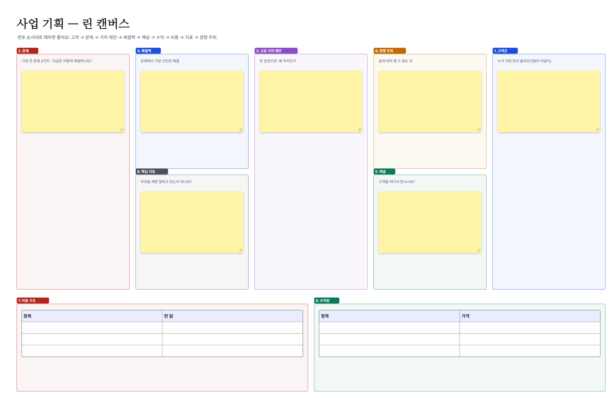

이런 분께: 기획·마케팅 팀, 창업 준비, 수업 토론, 동아리 기획
Walkie로 할 수 있는 것
- 아이디어 포스트잇 구역, 묶기 구역, 고르기 구역이 나뉜 템플릿
- 마인드맵: Tab 하위 가지 · Enter 같은 단계 · 겹치면 저절로 비켜요
- 점 투표: 사람마다 점 수를 정해 누르고, 결과를 보드에 남겨요
- 도형·화살표는 파워포인트처럼 점 편집으로 자유롭게 휘어요
- 사업 아이디어는 린 캔버스 템플릿으로 바로 정리


템플릿으로 바로 시작
- Walkie를 설치해요(Windows 10·11, 안드로이드). 혼자 쓰는 "이 기기 보드"는 로그인 없이 바로 열려요.
- 아래 템플릿 파일(.walkie)을 받아 두 번 누르면 Walkie에서 새 보드 한 장으로 열려요. 앱 안 도구 묶음의 "템플릿"에도 같은 템플릿이 있어요.
- 함께 쓰려면 그룹을 만들고 초대 링크를 보내요. 통화를 켜고 같은 보드를 동시에 고쳐요.
자주 묻는 질문
몇 명까지 함께 쓸 수 있나요?
보드는 그룹 멤버 모두가 함께 고치고, 음성 통화는 한 번에 최대 8명까지예요.
마인드맵을 다른 앱으로 옮길 수 있나요?
마인드맵 메뉴의 "개요로 복사"로 들여쓴 글을 복사해 메모장·워드·다른 마인드맵 앱에 붙일 수 있어요.